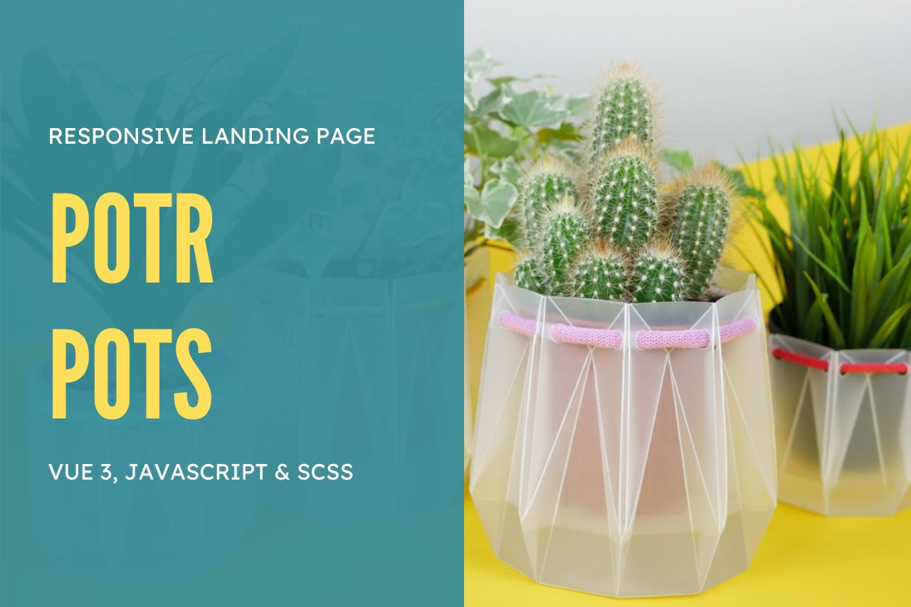

<div id="ajax-page" class="ajax-page-content">
  <div class="ajax-page-wrapper">
    <div class="ajax-page-nav">
      <div class="nav-item ajax-page-prev-next">
        <a class="ajax-page-load" href="portfolio-2.html"
          ><i class="lnr lnr-chevron-left"></i
        ></a>
        <a class="ajax-page-load" href="portfolio-4.html"
          ><i class="lnr lnr-chevron-right"></i
        ></a>
      </div>
      <div class="nav-item ajax-page-close-button">
        <a id="ajax-page-close-button" href="#"
          ><i class="lnr lnr-cross"></i
        ></a>
      </div>
    </div>

    <div class="ajax-page-title">
      <h1>Responsive Landing Page | VUE 3, JavaScript & SCSS</h1>
    </div>

    <div class="row">
      <div class="col-sm-7 col-md-7 portfolio-block">
        <div class="owl-carousel portfolio-page-carousel">
          <div class="item">
            
          </div>
          <div class="item">
            
          </div>
          <div class="item">
            
          </div>
        </div>

        <script type="text/javascript">
          jQuery(document).ready(function ($) {
            $(".portfolio-page-carousel").owlCarousel({
              smartSpeed: 1200,
              items: 1,
              loop: true,
              dots: true,
              nav: true,
              navText: false,
              margin: 10,
            });
          });
        </script>
      </div>

      <div class="col-sm-5 col-md-5 portfolio-block">
        <!-- Project Description -->
        <div class="project-description">
          <div class="block-title">
            <h3>Description</h3>
          </div>
          <ul class="project-general-info">
            <li>
              <p>
                <i class="fa fa-globe"></i
                ><a
                  href="https://github.com/meljaszuk/Eco-Pots-Vue"
                  target="_blank"
                  >GitHub</a
                >
              </p>
            </li>

            <li>
              <p>
                <i class="fa fa-globe"></i
                ><a
                  href="https://meljaszuk.github.io/Eco-Pots-Vue/"
                  target="_blank"
                  >Demo</a
                >
              </p>
            </li>

            <li>
              <p>
                <i class="fa fa-globe"></i
                ><a
                  href="https://www.figma.com/file/50zgLU65Mcd3MisFHMfLfx/POTR-POTS_FE-students?node-id=1760%3A281"
                  target="_blank"
                  >Figma</a
                >
              </p>
            </li>

            <li>
              <p>
                <i class="fa fa-calendar"></i> February 2024, update: September
                2024
              </p>
            </li>
          </ul>

          <p class="text-justify">
            I took on the demanding task of coding the frontend for the POTR
            pots landing page, a project embedded within a comprehensive course.
            Focused on the complexity of the design, I navigated through
            intricate layout modifications necessary for optimal display across
            diverse devices. The project also featured highly interactive
            sections, adding an additional layer of complexity to the coding
            challenge. The original project was developed using HTML and SCSS in
            a different repository. I migrated the original files and upgraded
            the project to use Vue and Vite, incorporating cart management based
            on global state. The number of products is stored in local storage,
            and material selection is also managed through the global state.
            <a
              href="https://github.com/meljaszuk/Eco-Pots-Vue/blob/main/README.md"
              target="_blank"
              >[ Read more >> ]</a
            >
          </p>
          <!-- /Project Description -->

          <!-- Technology -->
          <div class="tags-block">
            <div class="block-title">
              <h3>Technology</h3>
            </div>
            <ul class="tags">
              <li><a>HTML</a></li>
              <li><a>SCSS</a></li>
              <li><a>JavaScript</a></li>
            </ul>
          </div>
          <!-- /Technology -->
        </div>
        <!-- Project Description -->
      </div>
    </div>
  </div>
</div>
